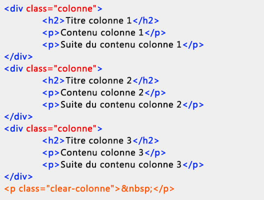

2.3 Balises HTML

HTML est un langage de balisage qui définit la structure du contenu. Un document HTML est une suite d'éléments utilisés pour encadrer différentes parties du contenu afin de les faire apparaître ou se comporter d'une certaine façon. Les balises autour du contenu permettent de transformer une image ou un texte pour obtenir un lien vers une autre page, de créer des titres, etc.
- La balise ouvrante : celle-ci se compose du nom de l'élément (ici p), entre deux chevrons (le premier ouvrant < et le second fermant >). Cela indique le début de l'élément, ici cela indique où le paragraphe commence.
- La balise fermante : à la différence de la balise ouvrante, une barre oblique (slash) est ajoutée avant le nom de l'élément. Cela indique la fin de l'élément. Dans notre exemple, c'est l'endroit où le paragraphe s'arrête. Oublier cette balise fermante est une erreur qu'on fait souvent au début et qui peut déclencher des effets étranges et indésirables.
- Le contenu : le contenu de l'élément. Pour cet exemple, il s'agit uniquement de texte.
- L'élément : l'ensemble formé par la balise ouvrante, la balise fermante et le contenu constitue l'élément.